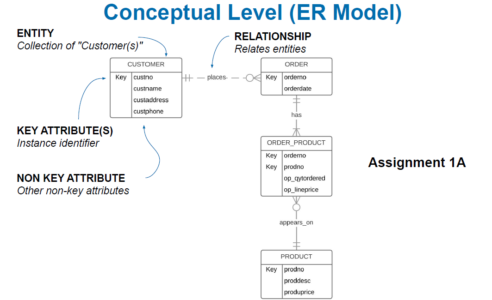
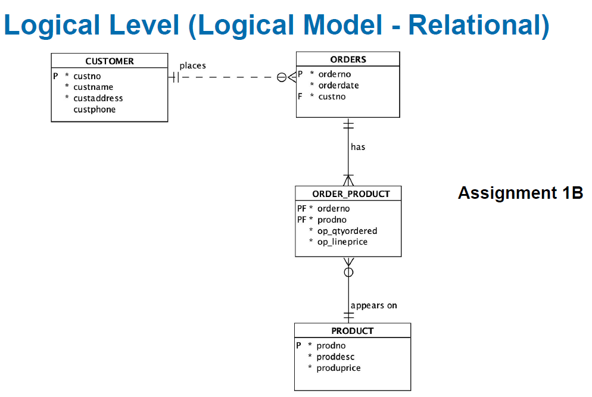
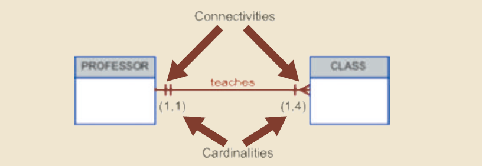
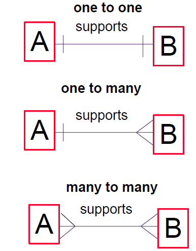
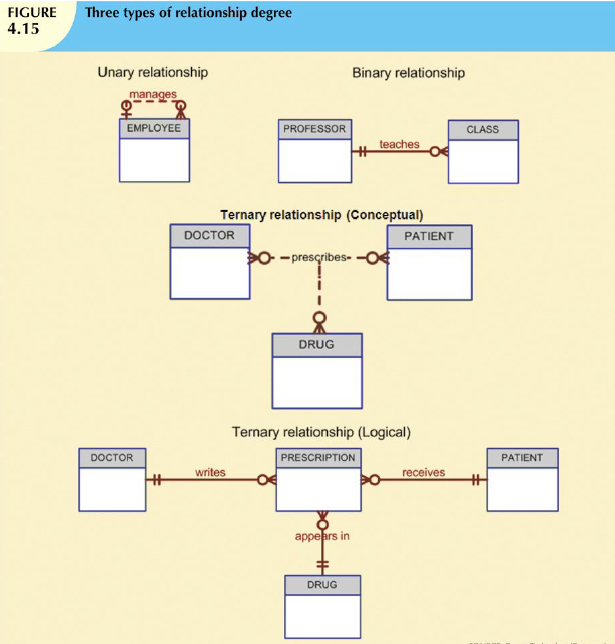
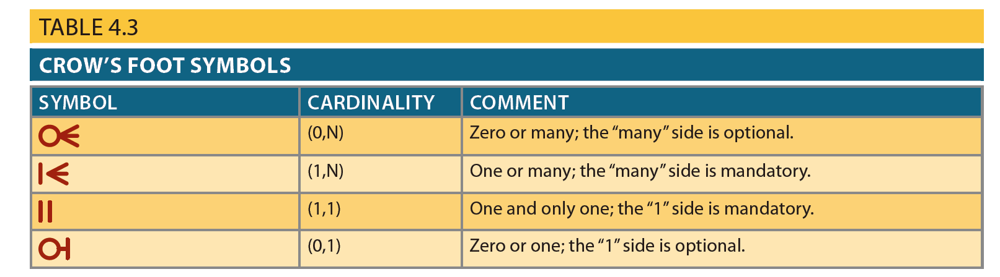
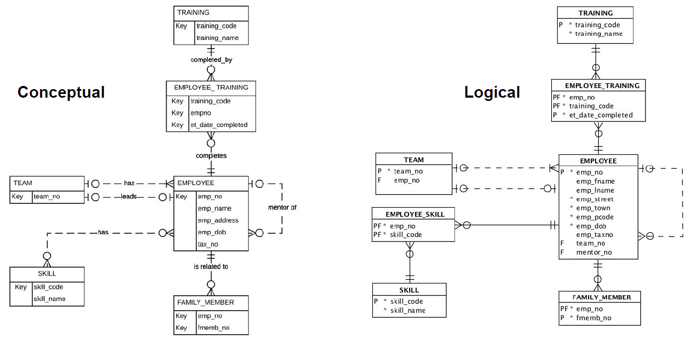
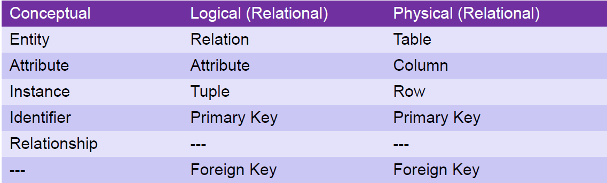

Data Modelling
Conceptual vs Logical Level


▪Entity
–Strong vs weak
Strong entity
– Has a key which may be defined without reference to other entities.
Weak entity
– Has a key which requires the existence of one or more other entities
1. entity is existence-dependent; it cannot exist without the entity with which it has
a relationship.
2. entity has a primary key that is partially or totally derived from the parent entity
in the relationship.
–Associative entity
Associative (Composite) Entities ER model uses the associative entity to represent an M: N relationship
between two or more entities.
理解:连接两个表的一个表，有两个表的主键；依赖于另两个表存在；可以有附加值
▪Types of attributes
Simple: Cannot be subdivided. e.g. Age, sex, marital status
Composite: Can be subdivided into additional attributes. e.g. Address into street, city, zip
Single-valued: Can have only a single value. e.g. Person has one social security number.
Multi-valued: Can have many values. e.g. Person may have several college degrees.
Derived: Can be derived with algorithm. e.g. Age can be derived from date of birth.
▪Relationship
–Connectivity
The type of relationship between entities. Classifications include 1:1, 1:M, and M: N.
–Cardinality
Cardinality expresses the minimum and maximum number of entity occurrences
associated with one occurrence of the related entity. In the ERD

- type: one-to-one, one-to-many, many-to-many

–Participation
Optional participation： one entity occurrence does not require a corresponding entity occurrence in
a particular
relationship（图上是⚪）
Mandatory participation： means that one entity occurrence requires a corresponding
entity occurrence in a particular relationship. （图上切断线）

–Identifying vs Non-identifying.
Strong (Identifying) Relationships：the primary key of the related entity contains a primary key
component of the parent entity. (子类的主键包含父类的主键)--实线
Weak (nonidentifying) relationship: A relationship in which the primary key of the related entity
does not contain a primary key component of the parent entity. (父类的主键是子类的非主键) 相关实体的
主键不包含父实体的主键组件。--虚线
▪Mapping from Conceptual to Logical

–E.g. Mapping many-to-many
